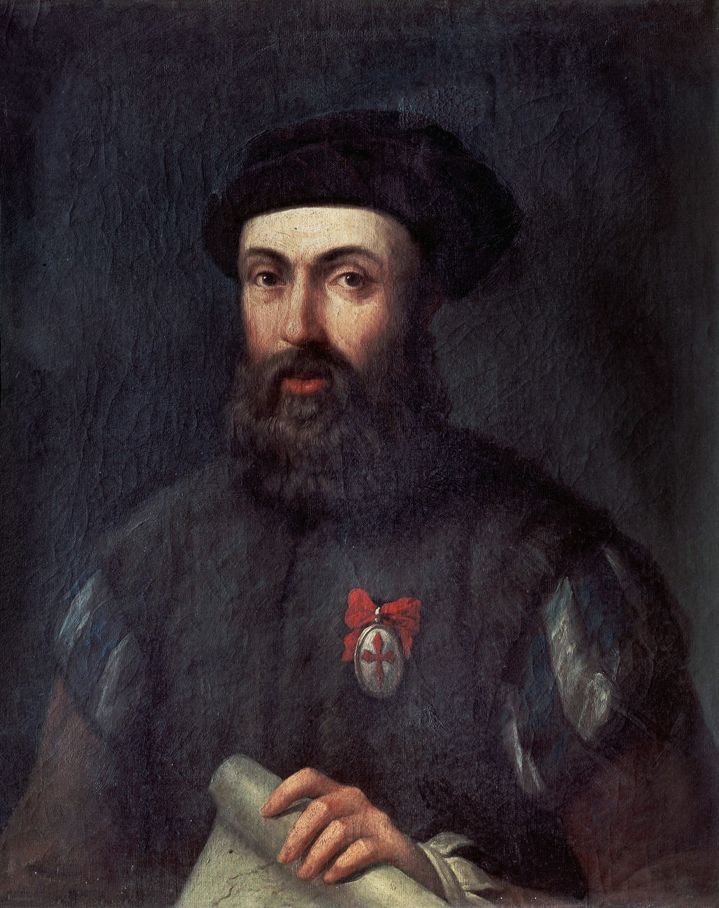
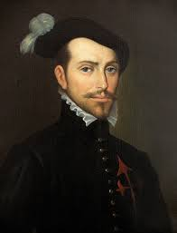
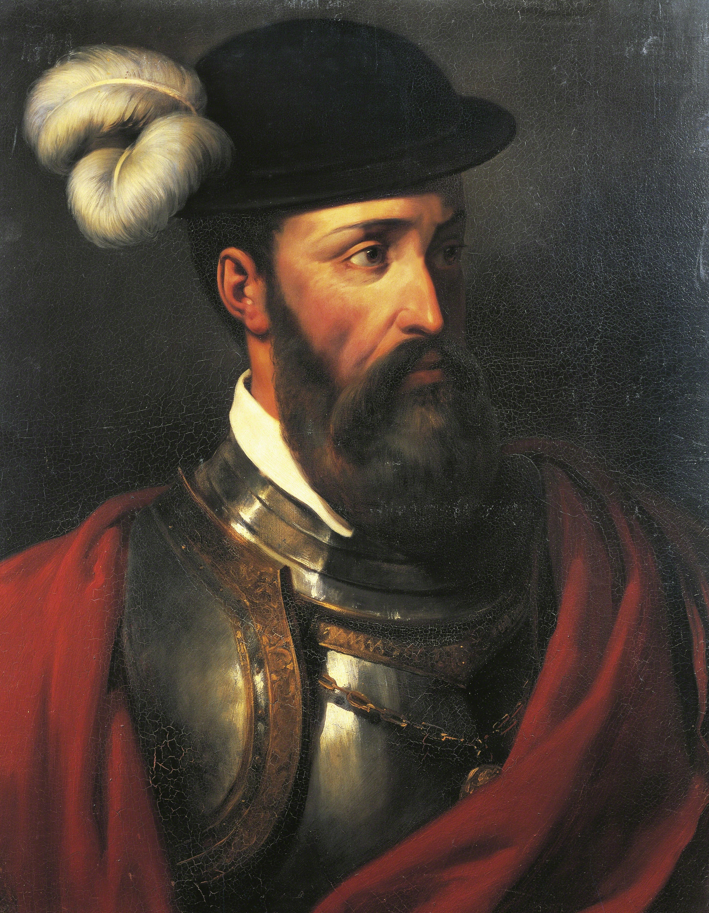

Spanyol felfedezők
- a spanyol királynő támogatásával (Kasztíliai Izabella) indult Kelet felé Kolumbusz Kristóf olasz származású tengerész
- Toscanelli térképe alapján nyugat felé hajózva Indiába akart eljutni
- 1492: elért a Bahamákhoz, majd Kuba, Hispaniola szigetére
- Még 3 expedícióban 1493-1504-ig megalapozta a spanyol uralmat
- Abban a hitben halt meg, hogy Indiában járt
- Az olasz, de portugál szolgálatban lévő hajós, Amerigo Vespucci ismerte fel az új földrészt
További felfedezők
- Magellán: 1519-1521 körülhajózta a Földet, Dél-Amerika csücskét róla nevezték el Magellán-szorosnak (ő maga nem, de egy hajója hazajutott) 
- Cortes 1519-21: Dél- Mexikóban megdöntötte az azték birodalmat
- Alvarado 1523: maya birodalom megdöntése
- Pizarro 1531: inka birodalom megdöntése
- 1494. tordesillas-i szerződés:
- a spanyolok és portugálok felosztották egymás között az Újvilágot, Brazília kivételével szinte egész Amerika a spanyoloké lett
- 1529. zaragozai szerződés
- ázsiai, óceániai érdekszféra felosztása (itt a portugáloknak jutott nagyobb terület)


